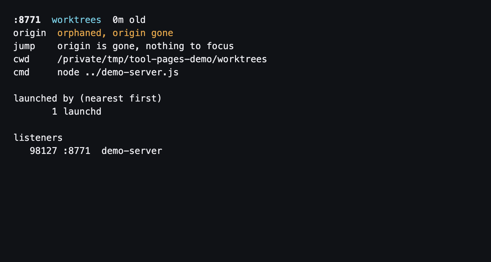

devps
Find the server. Get back to work.
Ports, projects, and the sessions that started them. Built for macOS.


Install
brew install filipgutica/tap/devpsHomebrew installs Python and fzf. devps supports macOS only.
Install Homebrew first if the brew command is unavailable. See the README for installation details.
Get back to the right session
List running servers
Get a plain table with one row per job, including jobs that listen on several ports.
devps lsOpen the picker
Press Enter to jump, Ctrl+O to open in the browser, or Ctrl+X to review stopping a job.
devpsJump to a server
Use a listening port or PID from the list. devps focuses the terminal, editor, or agent app that started it.
devps jump 5173Keep these close
devps open 5173- Open the server in your browser.
devps kill 5173- Stop the job and its children after confirmation.
devps --all- Include every TCP listener, beyond dev runtimes.
Tab / Ctrl+R- Multi-select or refresh in the picker.
Jump precision depends on the origin: terminal tabs and panes can be targeted; editor and agent origins may focus an app or window. Stopping sends SIGTERM, then SIGKILL to survivors after three seconds.
More tools for local work
All three tools are available from Filip’s Homebrew tap.